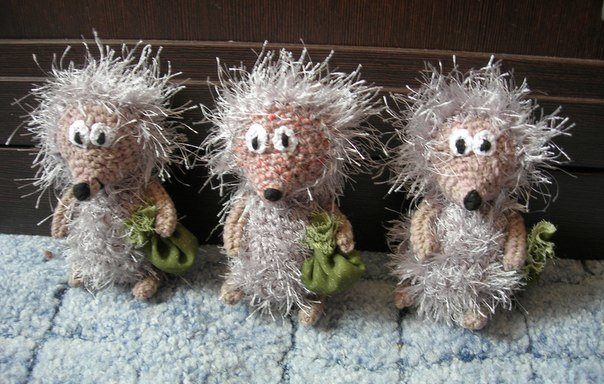
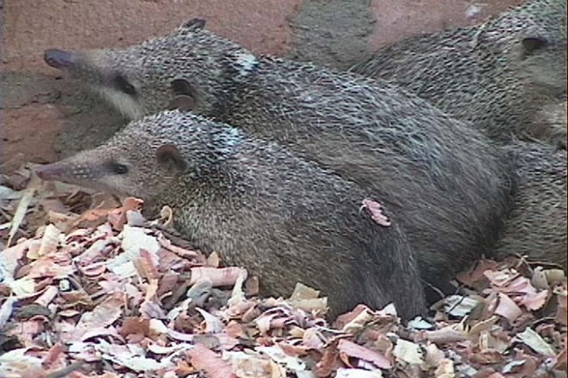

Главная информация
- Еж
- самый обычный, местами многочисленный вид.
Он легко приспосабливается к жизни рядом с людьми и довольно
часто содержится как домашнее животное. Известно, что римляне ещё в IV в. до н. э.
выращивали ежей ради мяса - его запекали вместе с иголками в глине. Некоторые
народные снадобья (в частности от облысения) включали пепел, желчь, внутренности или кровь ежа.
Принято считать, что самые первые ежи появились на Земле около 30 млн. лет назад, в олигоцене. К концу следующего миоценового периода, т. е. около 5 млн. лет назад, ежи расселились по всей планете, кроме Австралии, Южной Америки, Мадагаскара и Антарктики. Именно к этой эпохе относятся ископаемые останки гигантского волосатого ежа (Deinogalerix). Этот крупный зверь величиной со среднюю собаку обитал на юге Италии, и в его рацион, по-видимому, входили другие млекопитающие.
За последние 5 млн. лет ежи на каком-то этапе исчезли в Северной Америке. В наши дни они широко распространены по всей Европе, начиная с Южной Скандинавии и заканчивая Британскими островами, в России, во всей Африке, на Ближнем Востоке, в Китае и Юго-Восточной Азии. В Австралии их нет, зато в Новой Зеландии великое множество.

Существует еще 4 вида ежей, которые, как ни странно, совсем не имеют иголок. Это:
- Гимнуры (крысиные ежи),
- Щелезубы,
- Кубинские щелезубы,
- Танреки (щетинистые мадагаскарские ежи).
